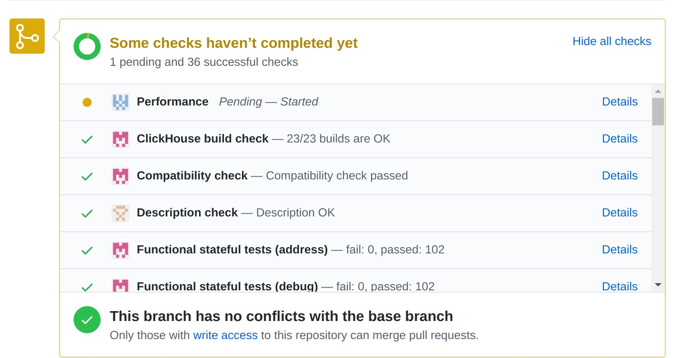

本文首发于 2020-06-05 19:37:10
《ClickHouse和他的朋友们》系列文章转载自圈内好友 BohuTANG 的博客，原文链接：
https://bohutang.me/2020/06/05/clickhouse-and-friends-development/
以下为正文。
一次偶然的机会，和ClickHouse团队做了一次线下沟通，Alexey提到ClickHouse的设计哲学:
- The product must solve actual problem
- And do it better than others
用工程思维解决商业问题的典范啊！
对用户来说，他们关心的不是什么天花乱坠、上天入地的高科技，只是需要一个能很好解决自己问题的方案，这在开源社区是非常难得的，靠实力“野蛮式”生长。
于是，我对这个散发着伏特加味道的利器充满了好奇，并参与到ClickHouse的社区中一探究竟，第一感觉是开放、友好、战斗力强(AK47 vs CK16, ClickHouse 2016年开源)。
本文先从编译和测试入手，再到如何为社区贡献Patch，希望对那些想参与CK社区的同学有所帮助。
如何本地编译和测试ClickHouse？
源码获取
1 | git clone --recursive https://github.com/ClickHouse/ClickHouse |
编译准备
1 | sudo apt install build-essential |
开始编译
1 | cd ClickHouse |
测试方法
ClickHouse的测试在官方development/tests文档里有详细的介绍，这里列举3个常用的测试模式：
1. Functional Tests
功能测试，主要用于ClickHouse内部功能测试，方式：输入一个sql文件，输出一个result，类似MySQL里的mtr，测试集合
1 | cd tests |
2. Integration Tests
集成测试，主要用于涉及第三方服务的测试，比如MySQL/Postgres/MongoDB等，以容器化方式编排调度(pytest)运行，测试集合
由于涉及模块较多，集成测试环境的搭建有一定的难度，建议使用官方的docker镜像。比如要跑test_mysql_protocol下的集成测试集：
1 | cd tests/integration |
3. Unit Tests
单元测试，主要用于代码模块的测试，测试集在各个模块的tests目录，比如: Core/tests
如果大家想了解某个模块是如何工作的，强烈建议去翻翻该模块的tests目录，比如想了解processor的工作机制，跟踪调试 Processors/tests/ 即可。
如何给ClickHouse社区提Patch？
1. fork
首先在自己的github上fork一份ClickHouse代码，比如 https://github.com/BohuTANG/ClickHouse
2. clone到本地
1 | git clone --recursive https://github.com/BohuTANG/ClickHouse |
3. 创建新的分支
1 | git checkout -B mysql_replica(branch名字) |
4. 功能开发
开发者可以提交一个Draft Pull Request到官方，github会显示这个Pull Request处于Draft状态，官方是无法Merge的
5. can be testd标签
等待Upstream打[can be tested]标签，一旦被标记CI狂魔们就强势开跑，跑一轮大概需要几十个小时。
协助开发者发现一些代码Style、编译以及测试等错误，这样开发者就可以在自己的分支不停的迭代、修正。

如果只是修改typo，这个标签Upstream通常不会添加。
6. 开发完毕
开发完成，测试OK，把Draft提升为正式Pull Request，等待Upstraem Review。
7. Merge到Master
如果Upstream通过，你的代码会被Merge到Master，恭喜你成为ClickHouse贡献者
8. 注意事项
ClickHouse Upstream迭代非常快，一定要多关注master分支进度，尽量保持自己的分支代码与master同步。否则Upstream Docker更新，自己的test可能就过不了。
建议把doc/development读一遍。
欢迎关注我的微信公众号【MySQL数据库技术】。

| 标题 | 网址 |
|---|---|
| GitHub | https://dbkernel.github.io |
| 知乎 | https://www.zhihu.com/people/dbkernel/posts |
| 思否（SegmentFault） | https://segmentfault.com/u/dbkernel |
| 掘金 | https://juejin.im/user/5e9d3ed251882538083fed1f/posts |
| 开源中国（oschina） | https://my.oschina.net/dbkernel |
| 博客园（cnblogs） | https://www.cnblogs.com/dbkernel |